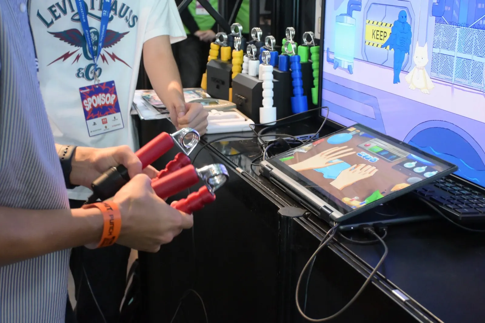
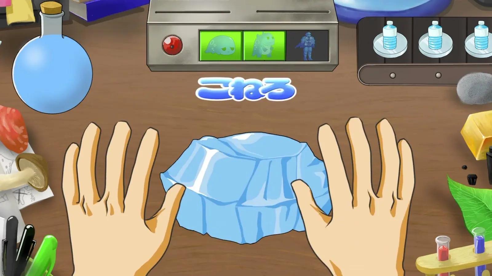
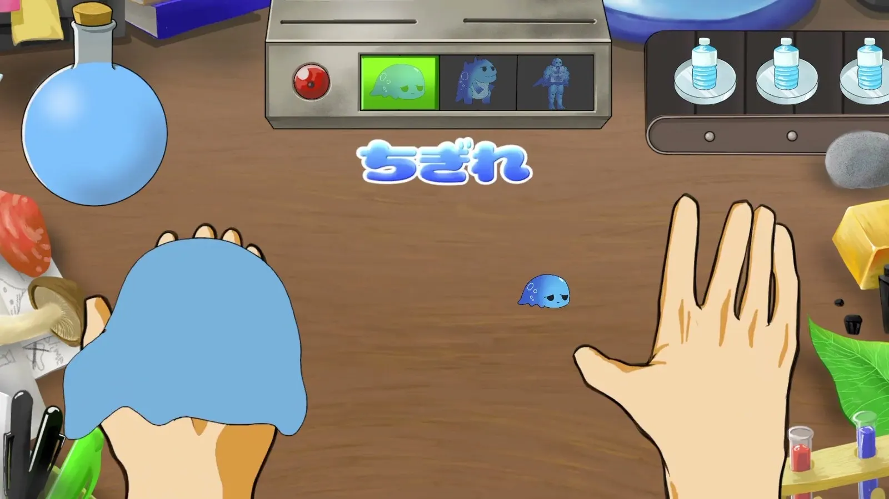
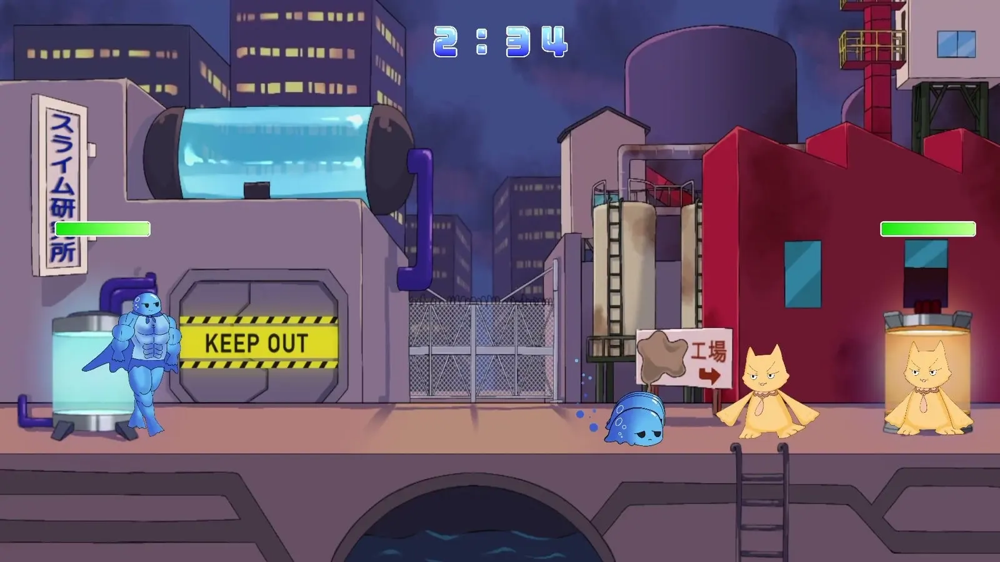
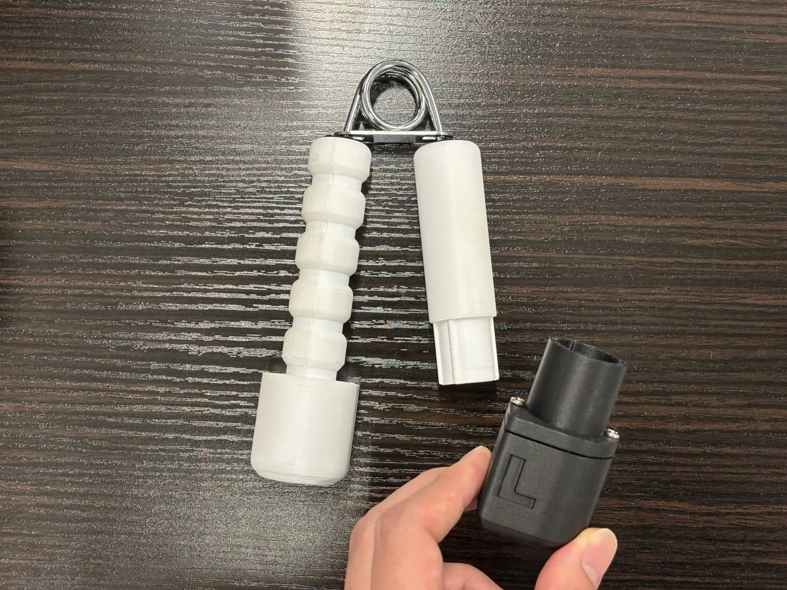
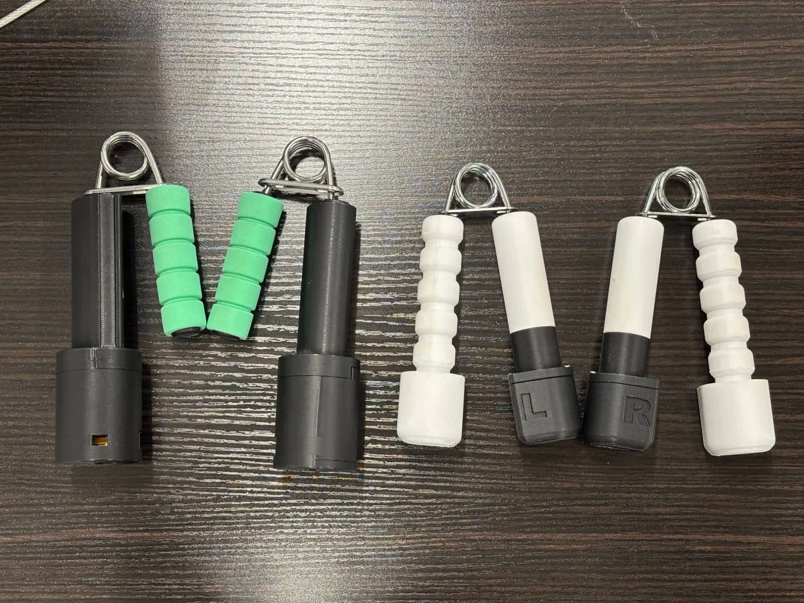

01作品概要
遊び方
コントローラーを握ってスライムをこね、ちぎって戦場へ送る。
担当したこと先輩が作った握るコントローラー「ニギコン」を受け継ぎ、遊びやすく改良した。
ここが好き
グリップを選んで
付け替える遊び。
02遊び方
握って、こねて、ちぎって、戦場へ。

ニギっとスライム研究所とは
下の画面でスライムをこね、上の画面の戦場へ送る。戦況に合わせてこね具合を変えて戦う、タワーディフェンスゲーム。

1 潰して、こねる
両手で握って素材を潰し、左右交互に握ってこねる。

2 ちぎる
好みの固さになったら、片方のニギコン 2 を振ってちぎる。

3 戦場へ
ちぎったスライムが、上の画面の戦場で戦う。
03ニギコンと目玉

ニギコンとは
握る
どれだけ握り込んだかが、
そのまま操作になる。
ほかにも 振る 傾ける （左右の手で別々に）
目玉
難易度を、ゲームの外で付け替える。
- グリップ
- 重さの違うグリップに付け替えられる（5〜30kg、5kg 刻み）。
- なぜ目玉か
- 固さが同じだと、力の弱い人と強い人とで、「自分でちゃんとできた」感覚が違ってしまう。だから、自分に合った固さを手で選べるようにした。

04受け継いで育てる
学んだこと人が作ったものの価値を見つけ、伸ばす。
一人で任される
「よりいいものを」という課題で、コントローラーを一人で任された。
良さを見極める
初代を遊んでみて、付け替えがほかにない良さだと考えた。
提案して、磨く
自分で考えた改良案を、ディレクターに提案し採用された。

- 選ぶ
- グリップを置く台座を作り、重さの順に並べた。
- 外す
- グリップとセンサー部の色を分け、見た目をすっきりさせた。
- 付ける
- 磁石でカチッと付く形にし、L・R の文字を入れた。
- 結果
- 色を分けたことで、「ここを外す」が説明なしで伝わっていた。

次の作品
トリ合い・譲り合い
最後の一本を取ったら、最下位。